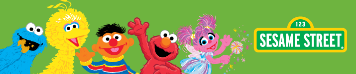

Elmo is a Muppet character on the children's television show Sesame Street. He is a furry
red monster with a falsetto voice, who hosts the last full fifteen-minute segment (five minutes after
2017) on Sesame Street, "Elmo's World", which is aimed at toddlers. He was most often puppeteered
by Kevin Clash. Following Clash's resignation in late 2012, he has been puppeteered by Ryan Dillon.
| First appearance | c. 1972 (as Baby Monster) 1981 (in print)[1] November 18, 1985 (as Elmo) |
| Portrayed by | Principal performers
Ryan Dillon (2013–present) Kevin Clash (1985–2014) |
| Birthday | February 3 |
| Species | Sesame Street Muppet Monster |
| Gender | Male |
| Nationality | American |